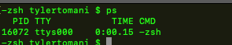
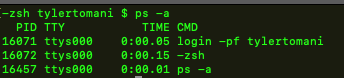
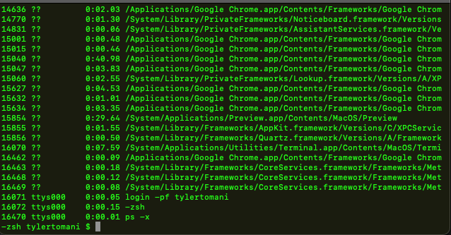
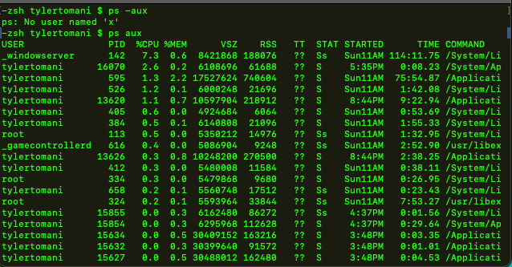
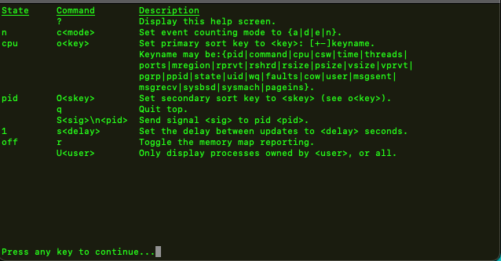

Monitoring Processes Commands
- ps
"Process step"
- top
ps
returns current users processes
ps -a
-a returns procces owned by all users
ps -x
shows ALL proccesses running very long list
ps aux
returns list of all proccesses and who own them
no dash - is needed because of old command or something
top
this gives us a running dashboard of current running procceses
when running type question mark ? to get a help screen
hit "space" to exit help, hit "q" to quit top
